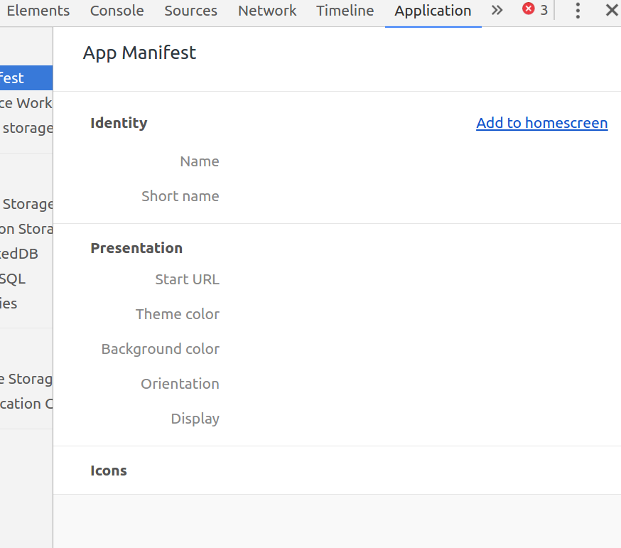

PW2 - Manifest
Pour valider votre manifest, et si vous avez une connexion, vous pouvez utiliser le site https://manifest-validator.appspot.com/.
Pour tester votre Manifest, vous pouvez utiliser les DevTools* de Chrome, et notamment l'onglet Application**. Vous pourrez également y tester l'installation de votre application sur le bureau de votre ordinateur.
- Dans le répertoire
server/app/assets, créez un fichiermanifest.json, dans lequel vous allez définir les informations suivantes :- L'URL de base doit être
/ - La propriété
background_colordoit être égale à#FFFFFF - La propriété
theme_colordoit être égale à#000000 - Vous devez utiliser le mode
standalone - Définissez une valeur pour les propriétés
nameetshort_name - Les icônes (disponibles dans le répertoire
server/app/assets/imgs/icon-*.png)
- L'URL de base doit être

Vous pouvez à présent vérifier le nouveau score calculé par LightHouse.